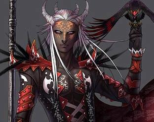

Forums galactiques > Assemblée Galactique : diplomatie officielle > Pour ou contre les alliances des coalitions ?
Oui, c'est très pratique | 16 | |
Ca peut toujours aider | 24 | |
Bof... | 5 | |
Il vaut mieux se débrouiller seul | 4 | |
Totalement INUTILE ! | 14 | |
Total : 63 vote(s) | ||
Pages : 1 2
| Ren56 Respect diplomatique : 92  28/05 ETU 14:25 | Score : 0 Détails Je crée ce topic car je trouve que des alliances entre les coalitions adouciraient les guerres entre commandants et peut etre meme les rendre amis et apaiser nos coeurs de cette guerre qui nous ravagent.
Ces guerres qui font tant de morts et qui apportent meme la mort de certains commandants comme Eventine ou Kurt. Ces guerres qui ne nous font plus rire mais souffrir , pleurer que sourire... C'est pourquoi je pense que créer des alliances entre les coalitions seraient un pas vers la paix dans Esperance. A vous de voir... | ||
| Djib Respect diplomatique : 525  28/05 ETU 14:38 | Score : 3 Détails ?
| ||
| Ren56 Respect diplomatique : 92 28/05 ETU 14:41 | Score : 0 Détails Pourquoi un tel étonnement commandant Djib ?
| ||
| Ragnard Respect diplomatique : 1318  28/05 ETU 14:43 | Score : 6 Détails Certes, cela pourrait paraitre intéressant, cependant quelques problèmes se posent. Dans le cas d'une alliance totale ou militaire, si l'une des coalitions de l'alliance entre en guerre contre une autre coalition, les devoirs de tous les signataires de l'alliance leur imposeraient de soutenir leur alliée. Ce serait alors, non pas un conflit limité, mais une guerre quasi galactique au final.
En fait, tout dépend du type d'alliance établi - Alliance marchande. - Alliance diplomatique. - Alliance militaire. - Alliance diplomatique et militaire. - Alliance totale. De plus, rien n'interdit les alliances à l'heure actuelle, que ce soit les alliances entre coalitions ou entre peuples ou entre coalition et peuple indépendant, voire même entre un peuple appartenant à une coalition et une autre coalition que la sienne. Et là, d'ailleurs, un autre problème apparait. Que faire si votre coalition entre en guerre contre une coalition avec qui vous avez une alliance indépendamment de votre propre coalition? Tout cela pour dire, qu'en fait, je ne pense pas réellement que des alliances entre coalitions puissent faire avancer vers la Paix, bien au contraire. Ce serait plutot le contraire si deux coalitions puissantes, alliées entre elles, décident de ravager la galaxie. | ||
| Ren56 Respect diplomatique : 92 28/05 ETU 14:48 | Score : 2 Détails Commandant Ragnard pour ce que j'appele une alliance c'est une alliance politique, economique et diplomatique. Ne vaudrait il mieux pas parler que de prendre les armes? Si ces deux coalitions s'alliaient il nous suffiraient de créer une chartre où les membres de l'alliance devraient signer pour la paix et non pour la destruction de la galaxie . Il vaut mieux s'aider que se détruire non ?
| ||
| Djib Respect diplomatique : 525 28/05 ETU 15:17 | Score : 2 Détails Je ne vais pas repeter ce qu'a tres bien dit mon ami Ragnard.
- Vous partez d'un theoreme qui est faux des le depart, les alliance entre les coallitions ne sont pas forcement porteurs de paix. Vous confondez la finalité et le moyen, l'alliance n'est qu'un moyen qui sert une finalité. On s'alliera pareil qu'il s'agisse d'etablir la paix ou de mettre une tole a un commandant. - Quel est la finalité du vote, je peux comprendre que vous ouvriez un debat sur le plan philosophique, mais le vote je ne comprend pas bien (d'ou mon point d'interrogation parfaitement orthographié). - une coallition etant deja une alliance, je suis tres reservé sur les alliances des alliances. | ||
| M.HILTON Respect diplomatique : 5  28/05 ETU 16:07 | Score : 0 Détails personnelement je trouve sa tres bien mais je n'arrive pas a trouver les mots pour dire pourquoi.
Mais c'est bien et pratique que si il on le meme points de vue biensur(comme la dit ragnard) | ||
| Général BlackThunder Respect diplomatique : 2  28/05 ETU 16:54 | Score : 1 Détails La guerre est inévitable... dans tout système, il y a des guerres, et a mon avis, a la fin nous verrons 2 coalitions, qui, ayants des différences d'opinions, se feront la guerre entre eux... ne serait-il pas plus judicieux de garder le même système? comme sa, certaine coalition pourrait rester "neutre" éventuellement, et donc l'ampleur des guerres seront moindre....
enfin... a vous de voir.... A voté | ||
| Shark Respect diplomatique : 156  28/05 ETU 18:25 | Score : 0 Détails A voté
mais avec un doute. J'approuve les dit de notre ami Ragnard. | ||
| Ryuk Respect diplomatique : 43  29/05 ETU 13:06 | Score : 0 Détails Le principe de coalition à justement pour but de se regrouper alors créer des coalitions de coalition...
Je tient à signaler que le Commadant Eventine n'à pas quitté Espérance à cause d'une guerre. Mais plutot à cause d'une personne qui posséde un complexe de supériorité trés dévellopé. Je ne citerais personne: M.Héra et ses petits amis. Il serait plus utile de dévelloper le concept d'humilité que de se regrouper. Même si je pense que l'union fait la force. | ||
| Daf Respect diplomatique : 509  29/05 ETU 15:05 | Score : 1 Détails Oui ou sinon, si vous voulez que esperance ai un nouveau systemes politique, vous creez une chambre des coalitions, ou toutes les coa seraitent represente par 1 ou 2 cdts, et vous faites elire un president des coalitions...ou president d'esperance...qui serait elu par les representant des coalitions...
Pour les non coalisé, tant pis pour eux, a eux de choisir une coa...(une minorité a mon sens), ou meme creer une coa des non coalisé...(pour le recensement)...et en attendant d'etre dans une coa... Voila a vous... | ||
| Dame Yuna Respect diplomatique : 405  29/05 ETU 17:33 | Score : 0 Détails Je pensse que cela pourait etre utile afin d'évité plus de conflits
Je vous annonce aussi la fin du Poltergeist Le Doppelgänger devient indépendant et elle sera re-structuré ;) | ||
| Lia Respect diplomatique : 2740  29/05 ETU 17:41  | Score : 0 Détails La fin du Poltergeist?
Bien. Donc ca, c'est fait. Qui étaient les suivants? | ||
| black bird Respect diplomatique : 772  29/05 ETU 18:02 | Score : 2 Détails Ben... le doppelgänger non?
je ne sais pas... Ces petits jeunes se croyant l'Elite, c'est marrant à "shooter" non? Bon, pour l'instant, on va laisser Yuna gérer l'affaire. Mais si un des membres de cette coa (allier au Poltergeist, ne l'oublions pas) fait le moindre faux pas, elle le payera. | ||
| skipusien Respect diplomatique : 188  29/05 ETU 18:08 | Score : 1 Détails black bird oserait-il frapper sur une fille ???!!! :p
| ||
| Ren56 Respect diplomatique : 92 29/05 ETU 18:09 | Score : 0 Détails Et si c'était moi qui faisait une erreur Black Bird a qui le ferais tu payer ? A moi ou a Yuna?
| ||
| black bird Respect diplomatique : 772 29/05 ETU 18:11 | Score : 0 Détails Les deux...
voir toute la coalition. | ||
| Ren56 Respect diplomatique : 92 29/05 ETU 18:13 | Score : 0 Détails Je tacherais donc de ne pas faire d'erreur.
| ||
| Dame Yuna Respect diplomatique : 405 29/05 ETU 18:38 | Score : 0 Détails Black Bird nétoi tes oreil xD
Le Doppelgänger devient indépendant du Poltergeist ! HRP: la flemme de refaire une coa pour changer le nom ^^ enfin ci le nom vous dérange temp je la détruirais et la referais ^^ | ||
| black bird Respect diplomatique : 772 29/05 ETU 18:40 | Score : 2 Détails Indépendant, peux être...
mais ne me dis pas que la mentalité des commandants intégrés dans cette coalition a changé? Ils ne se croivent plus l'Elite de la galaxie?? Car il n'y a plus le Poltergay pour les protéger??? Quelle bande de lâche... HRP// on s'écarte un peu du sujet!^^ Je me fouetterai ce soir pour me punir, promis!^^ |
Pages : 1 2
Forums galactiques > Assemblée Galactique : diplomatie officielle > Pour ou contre les alliances des coalitions ?